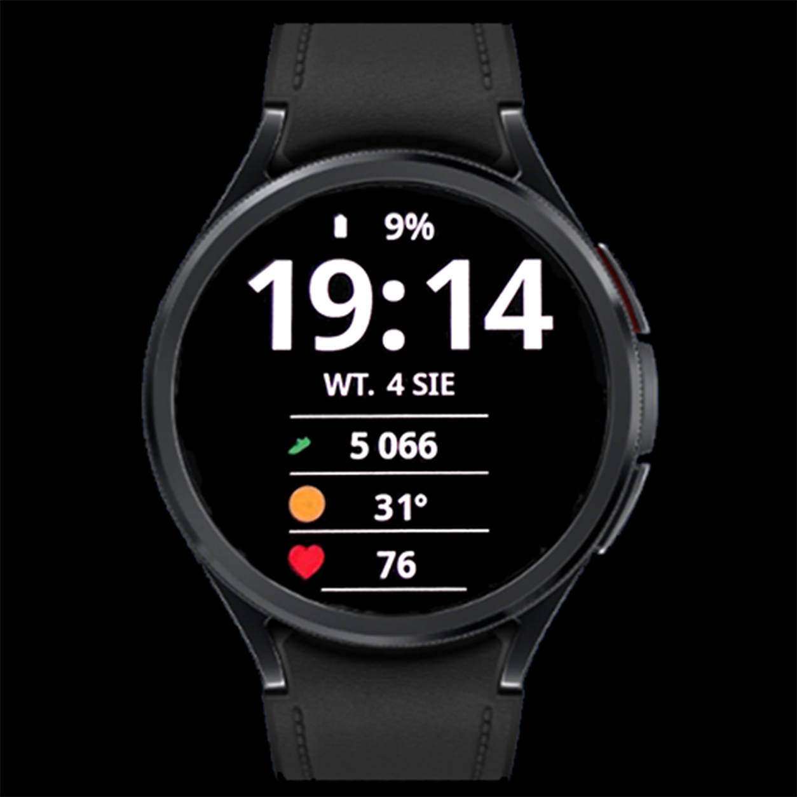

Clear Vision · Wear OS
CV03 Split Focus
Godzina na pierwszym planie.
CV03 Split Focus stawia na dużą godzinę i trzy czytelne wiersze informacji pod datą. Prosty układ pomaga skupić się na danych, które rzeczywiście chcesz widzieć, zachowując charakterystyczny dla Clear Vision wysoki kontrast.

Najważniejsze funkcje
- Duża cyfrowa godzina w formacie 24-godzinnym
- 3 edytowalne komplikacje pod datą
- Wyraźna data i poziom baterii
- Zmiana koloru godziny, daty i wartości baterii
- Uproszczony tryb Always-On Display
- Układ dla okrągłych zegarków Wear OS
Galeria
Galeria — 8 zdjęć
Dotknij zdjęcia, aby je powiększyć.
Trzy wiersze na wybrane informacje
Dolną część tarczy tworzą trzy edytowalne komplikacje. Możesz przypisać im zgodne źródła danych lub skróty aplikacji. Przykłady to pogoda, kroki, tętno, wydarzenia w kalendarzu, alarm lub godzina wschodu i zachodu słońca.
Kolory i format godziny
Kolor godziny, daty i wartości baterii zmienisz w personalizacji. CV03 używa formatu 24-godzinnego; wariant 12-godzinny z AM/PM nie jest dostępny. Kolory danych komplikacji zależą od ich dostawców.
Always-On Display
Po przejściu zegarka w tryb Always-On Display tarcza pokazuje uproszczony widok z czytelną godziną. AOD musi być włączony w ustawieniach zegarka; jego dostępność i zachowanie zależą także od urządzenia i ustawień systemowych.
Jak dostosować tarczę
- Ustaw CV03 Split Focus jako aktywną tarczę zegarka.
- Przytrzymaj tarczę i wybierz Dostosuj / Customize.
- Wybierz dane dla trzech pól pod datą, a następnie ustaw motyw koloru godziny, daty i wartości baterii.
- Zatwierdź wybór, wróć do tarczy i sprawdź wyświetlane dane.
Nazwy opcji mogą różnić się zależnie od zegarka i wersji Wear OS.
Instalacja i konfiguracja →Dodatkowe dane: Phone Battery Complication
Sama tarcza działa bez Phone Battery Complication. Ta zewnętrzna aplikacja od amoledwatchfaces jest niezbędna do wybranych dodatkowych źródeł danych, np. baterii telefonu. Zainstaluj i skonfiguruj ją na telefonie z Androidem oraz zegarku Wear OS. Dostępne pozycje zależą od zgodności źródła danych z wybranym polem.
Zgodność i działanie komplikacji
Tarcza jest przeznaczona dla zgodnych zegarków Wear OS. Przed instalacją sprawdź zgodność swojego urządzenia w Google Play. Dostępność, wygląd, długość tekstu i odświeżanie komplikacji zależą od zegarka, wersji Wear OS i dostawcy danych. Nie każda komplikacja działa w każdym polu. Jeśli pole pozostaje puste, sprawdź uprawnienia wybranej aplikacji lub wybierz inne zgodne źródło.
Pytania o CV03 Split Focus
Czy CV03 ma format 12-godzinny?
Nie. CV03 Split Focus wyświetla godzinę w formacie 24-godzinnym.
Czy trzy dolne pola można zmienić?
Tak. Każde z nich jest edytowalną komplikacją Wear OS.
Dlaczego pole jest puste?
Dostawca może nie udostępniać zgodnych danych dla wybranego typu pola. Sprawdź wymagane uprawnienia lub wybierz inną komplikację.